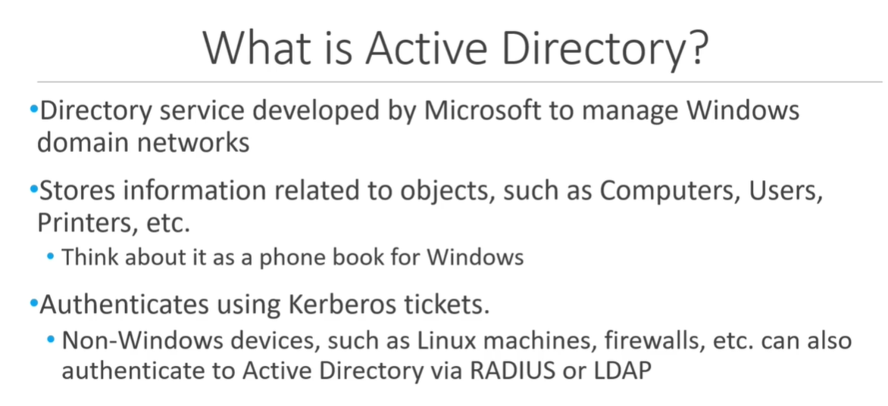

This section will come up for interview and will be ready to nail those section.
- Active Directory is like a phone book (i.e. stores all kind of infromation)


Think as a house and we broke the lock of the house externally and but don't about how to unlock the locks that are inside the house. (i.e. it could get messy really soon)